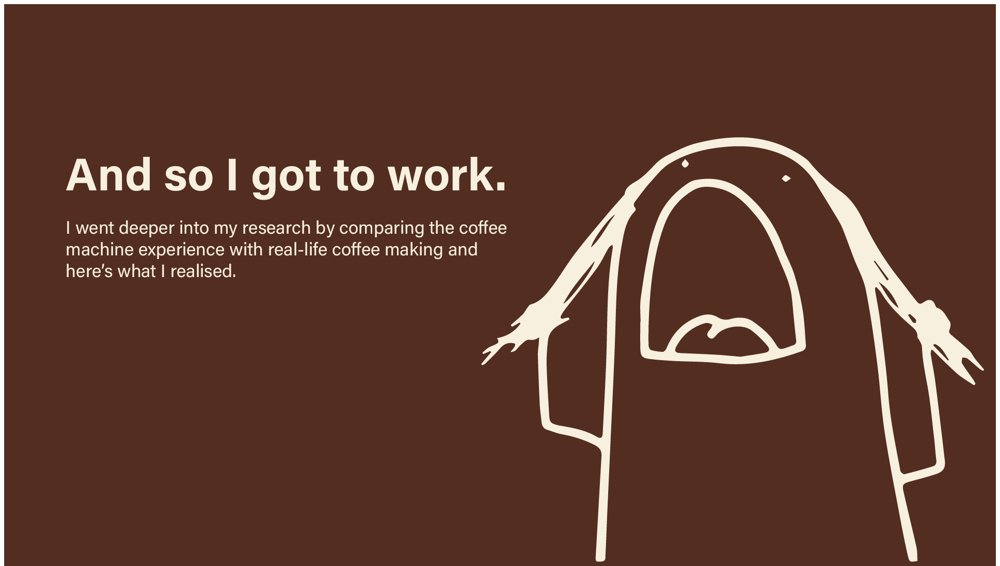
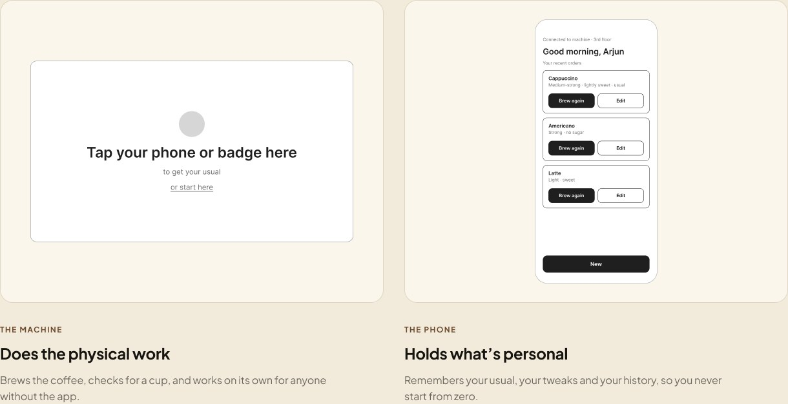
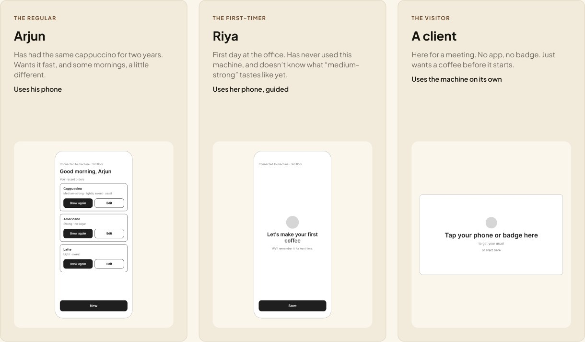
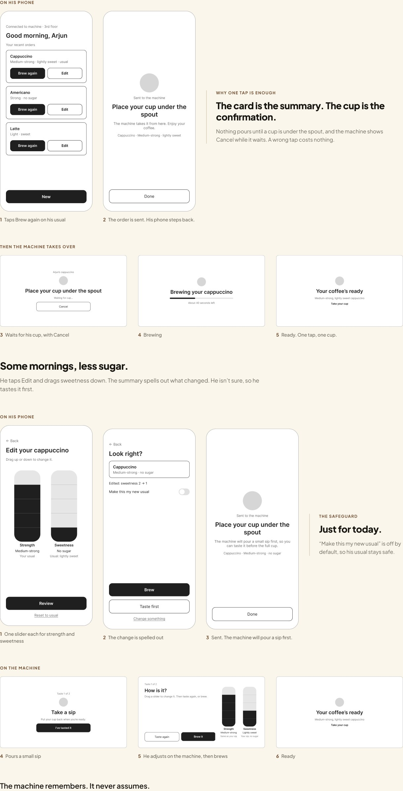
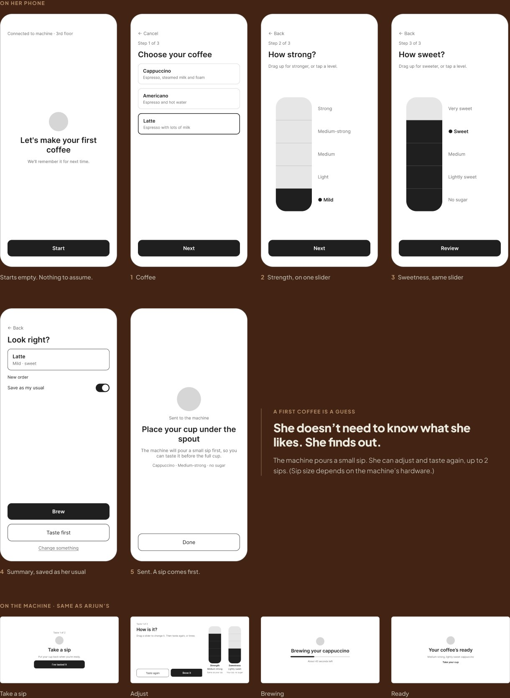
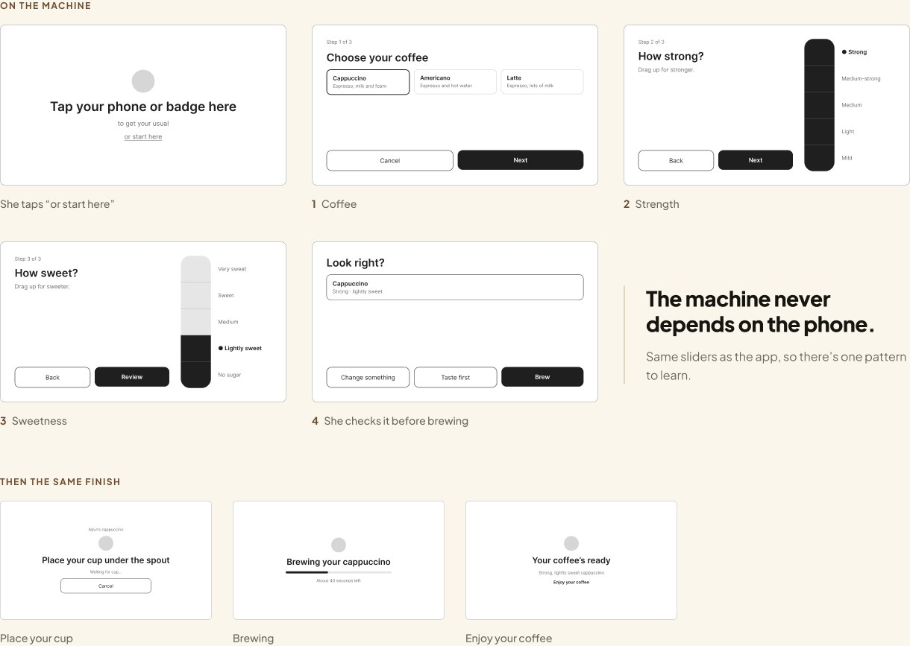
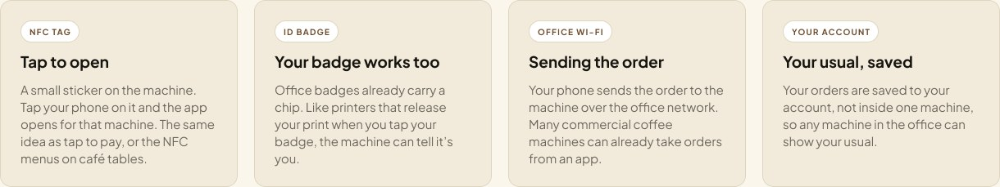

Half coffee, full confusion.
Redesigning a coffee machine interface so no one has to stand confused in front of it again.

01 · The story
Ten seconds of confidence.
My dad once told me about a new coffee machine installed in his office. Everyone gathered around, curious but hesitant. No one wanted to go first.
Eventually, one guy stepped forward. Confidently.
He pressed a few buttons. Nothing happened. He pressed a few more. His moment of confidence turned into embarrassment.
What should have been a simple coffee moment became public confusion.
That confidence lasted about ten seconds.
02 · The question
So I wondered: is this just a first-timer problem, or does the machine confuse everyone?
03 · How I researched it
Two ways in: what people told me, and what they’d already written down.
I didn’t want to rely only on what people said to my face. Interviews tell you what users notice; reviews tell you what they complain about once nobody’s watching.
In-depth interviews
I interviewed 12 people face to face, across a deliberately wide age range of 18 to 50 so the findings weren’t just a student sample.
The spread mattered: some had never seen a machine, some used one daily at the office, one had taught the subject. Generational difference showed up in how willing people were to press a button and find out.
Amazon review analysis
I read user reviews of coffee machines across several brands, looking for the gap between the rating and the writing.
Despite predominantly 5-star ratings, nearly every reviewer still described a learning curve and the effort it took to get comfortable with the machine.
That gap is the whole argument. People rate these machines highly and admit they had to learn them — which means the problem is real even where satisfaction is high.
04 · In depth interviews
I spoke to people who use coffee machines at home, offices and public spaces. It wasn’t very loved.
No feedback means no confidence.
“I want more feedback from the machine to get more confidence.”
Too many options means too much thinking.
“I struggled with multiple options and touchscreens the first time.”
People don’t want to learn the machine.
“I want my machine to learn and remember my drink, rather than me learning the machine.”
It’s not just first-timers. Regular users still made mistakes.
“It takes time to get used to the machine.”
05 · The pivot
From fixing errors → to preventing them.
At first, the problem seemed obvious: the machine just isn’t intuitive.
But that felt surface-level. The real issue was that people were scared of getting it wrong, and the machine never told them when they did.
So I started designing error feedback: warnings, messages, recovery screens.
Then a better question came up: why let the error happen at all?
Revisiting the user journey and my professor’s feedback confirmed it.
06 · The shift
And so I got to work.
I compared using a coffee machine with making coffee by hand, step by step. Here’s what I realised.
By hand
You control the quantities, taste as you go, and fix it after.
By machine
Quantities are fixed, there’s no tasting, and once it’s poured, it’s done.
Less control → more room for error.
07 · Problem statement
When control disappears, mistakes go up. That led me here:
Coffee machines intimidate users by offering little guidance, feedback or control, turning a two-minute coffee into confusion, lost confidence, and sometimes giving up altogether.
Same project. A much sharper target.
I wrote the first version before I’d spoken to anyone. Here it is next to the one I ended with, so the distance is visible.
“Coffee machines overwhelm first-time users with complex, non-intuitive interfaces, causing hesitation, confusion, and a loss of confidence in what’s meant to be a seamless experience.”
Written before any interviews. An assumption about who struggles and why.“Coffee machines intimidate users by offering little guidance, feedback or control, turning a two-minute coffee into confusion, lost confidence, and sometimes giving up altogether.”
Written after 12 interviews, the review analysis, and the shift from fixing errors to preventing them.Four things changed, and each came from the research
The question I opened with was whether this was a first-timer problem. It wasn’t. Regular users still made mistakes, and the reviews said the same.
“Non-intuitive” is a verdict, not a diagnosis — you can’t design against it. Three named deficits you can. Each became one of the three solutions.
A feeling became a behaviour. People switched to cafés, went back to brewing by hand, and some returned the machine. That is measurable in a way hesitation is not.
An abstraction became a unit. It also changes what the statement asks for: not “make it seamless”, but guide, confirm, and let people change their mind.
08 · Empathy map
I mapped what users say, think, do and feel, to find where the frustration actually sits.
“I want my machine to tell me clearly when I go wrong.”
“I rely on manuals and YouTube videos to understand what to do.”
“I want a balance between ease of use and the ability to customise.”
What the map told me
Mistakes happen in public.
Most people I spoke to use machines in shared spaces like offices and cafés. Users said they feel self-conscious, even judged, when others are around.
Confusion leads to compromise.
People settle for an easier drink than the one they wanted, or don’t try at all.
People walk away.
Many switch to cafés or manual brewing; some even returned the machine.
What they want is simple.
Clear, real-time guidance.
09 · Potential solutions
Three ideas, each answering one thing the research found.
One step at a time
A simple sequence lets users recognise choices instead of remembering how the machine works.
A summary before brewing
Users review type, strength and sweetness, and change anything before it’s too late.
A taste test
A small sample first, so users decide before committing to a full cup.
10 · What I learned
This project taught me patience, the value of going deeper, and the importance of looking twice before deciding what the real problem is. It reminded me that UX isn’t linear — it loops, twists, and reveals answers slowly.
And as someone great said: mediocre insights give mediocre solutions. Extraordinary insights give extraordinary solutions.
Next
Chapter 2 — After the pour
The machine got easier to use. It still didn’t know who was using it. Chapter 2 takes three people through a machine that remembers, and ends in a demo you can play.
01 — The next question
Easy to use. Tiring to repeat.
Chapter 1 made the machine easy to use. Now picture someone who loves it. Every morning they want the same coffee, so every morning they tell the machine all over again:
Cappuccino. Strong. Lightly sweet. Brew.
Monday. Tuesday. Wednesday. Thursday. Friday.
From a Chapter 1 interview
“I want my machine to learn and remember my drink, rather than me learning the machine.”
The machine got easier to use. It still didn’t know who was using it.
02 — The idea
What if the machine makes it, and your phone remembers it?
Instead of adding more buttons to the machine, I split the work. The machine does the physical part. Your phone holds what’s personal: your usual, your tweaks, your history.

03 — Three people, one machine
Same machine. Three different mornings.
To keep the design honest, I followed three people through it, each arriving with something different.

04 — Arjun, 9:02 AM
His usual, in one tap.
Arjun opens the app and his recent orders are already there. One tap on Brew again sends his usual to the machine. His phone tells him to place his cup, and the machine takes it from here.

05 — Riya’s first coffee
One choice at a time. Then, a sip.
Riya has no history yet, so the app starts empty and asks one thing per screen. Because it’s her first coffee, saving it as her usual is switched on.

06 — The visitor
No phone. No badge. Still coffee.
A client walks in before a meeting. She has no app and no badge, so the machine guides her on its own, one choice per screen, just like Chapter 1.

07 — Under the hood
Everyday technology, most of it already in the office.
Nothing here asks people to carry anything new. It uses what offices already have: phones, ID badges and a network.
These are proven, everyday technologies. How they’d be built into a specific machine is a question for the hardware team.

08 — Try it
Make a coffee with Arjun, Riya and a visitor.
A short, playable demo: pick a person, then make their coffee on a working machine and phone. It takes about three minutes.
09 — The reflection
Good coffee. A little more human.
I started by asking why people hesitate in front of a coffee machine. The answer wasn’t fewer buttons. It was a machine that knows you, and never assumes it does.
Chapter 2 is a proposed interaction concept. Nothing here has been usability tested, technically validated, or measured.